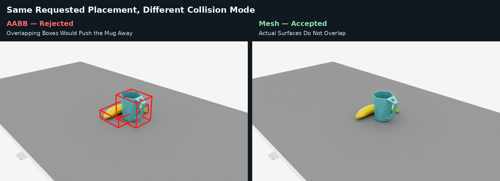
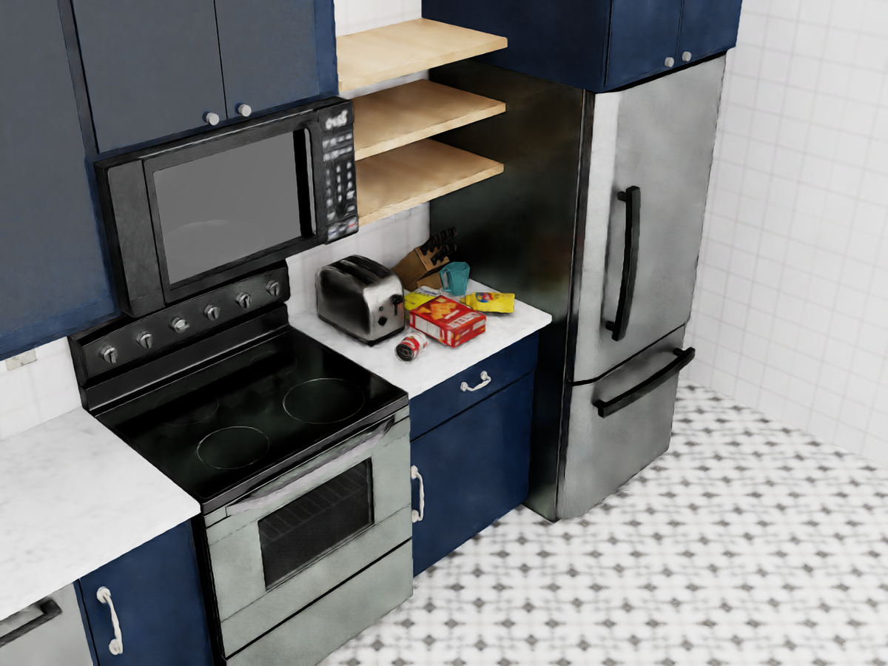

Collision Handling#
Collision handling is integrated into placement. Users describe where assets belong with spatial relations rather than adding a separate no-collision relation. The solver penalizes disallowed overlaps, and validators check the resulting candidates.
What Collision Avoidance Covers#
Arena checks each movable asset against other movable assets, fixed anchors,
and passive obstacles. A supporting pair connected by On is exempt so that
the placed asset can rest on its support. Fixed background assets can act as
passive obstacles when Arena can obtain their collision bounds. With mesh
collision, background geometry can therefore prevent placement inside
furniture, appliances, and other environment geometry.
In BBOX mode, fixed objects without placement relations can act as passive
bounding-box obstacles. Full-environment Background geometry is included
as a passive obstacle only in MESH mode.
Choosing a Collision Representation#
Arena supports two collision modes:
Mode |
Speed |
Geometry |
Recommended use |
|---|---|---|---|
|
Faster |
Axis-aligned bounding boxes |
Default choice when boxes reasonably approximate the objects |
|
Slower |
Bounding spheres queried against collision-mesh geometry |
Irregular or concave shapes whose boxes reject usable free space |
{kind=link}

For the same requested placement, BBOX rejects the layout because the
axis-aligned boxes overlap, while MESH accepts it using
sphere-versus-mesh collision checks.#
Start with BBOX. Use MESH only when bounding boxes exclude space that
the actual objects can safely occupy. Collision mode changes overlap checking;
it does not change the meaning of relations such as On or NextTo.
Todo
Document overlap-checking implementation details and debugging guidance.
Set the solver-wide default when defining an environment in Python:
from isaaclab_arena.environments.isaaclab_arena_environment import (
IsaacLabArenaEnvironment,
)
from isaaclab_arena.relations.collision_mode import CollisionMode
from isaaclab_arena.relations.object_placer_params import ObjectPlacerParams
from isaaclab_arena.relations.relation_solver_params import (
RelationSolverParams,
)
placer_params = ObjectPlacerParams(
solver_params=RelationSolverParams(
collision_mode=CollisionMode.MESH,
)
)
environment = IsaacLabArenaEnvironment(
name="mesh_placement",
scene=scene,
placer_params=placer_params,
)
An individual asset can override that default in either Python or YAML:
from isaaclab_arena.relations.collision_mode import CollisionMode
background = asset_registry.get_asset_by_name(
"lightwheel_robocasa_kitchen"
)()
background.collision_mode = CollisionMode.MESH
background:
id: kitchen
registry_name: lightwheel_robocasa_kitchen
params:
collision_mode: mesh
When a non-background asset has no extractable collision mesh, Arena uses its
bounding box as a proxy and logs the fallback. A full-environment
Background in MESH mode requires successful mesh extraction;
environment setup fails if that mesh cannot be extracted.
See RelationSolverParams for clearance, mesh fidelity, and solver tuning fields, and ObjectPlacerParams for placement-level controls.
Background and Passive Obstacles#
Assets do not need placement relations to act as obstacles. A table can be an
anchor that supports an On relation, while a nearby appliance can remain a
fixed passive obstacle. This lets Arena place objects on a surface while
avoiding the rest of a complex environment.
Here, passive means that the asset contributes collision geometry but the
solver does not move it. In contrast, placed objects and supported robot
embodiments are active placement participants whose poses the solver computes.
Passive obstacles therefore usually need a fixed initial pose. A
full-environment Background in MESH mode may use identity when its pose
is omitted.
The included kitchen example shows objects placed on a counter while avoiding the background mesh.
{kind=link}

The counter is the placement anchor. The surrounding stove, toaster, and refrigerator remain fixed passive obstacles represented by the kitchen collision mesh.#
Note
This command requires a graphical display. In a remote or container
session, configure display forwarding and set DISPLAY to the active X
display, for example export DISPLAY=:1.
Run the example from the repository root:
python \
isaaclab_arena_examples/relations/isaac_sim_kitchen_background_collision_notebook.py \
--viz kit \
--view_steps 0
--viz kit opens the viewer, and --view_steps 0 keeps it open until you
close the application.
Next Steps#
Continue to Placement Solver to see how spatial relations and collision constraints produce candidate layouts.